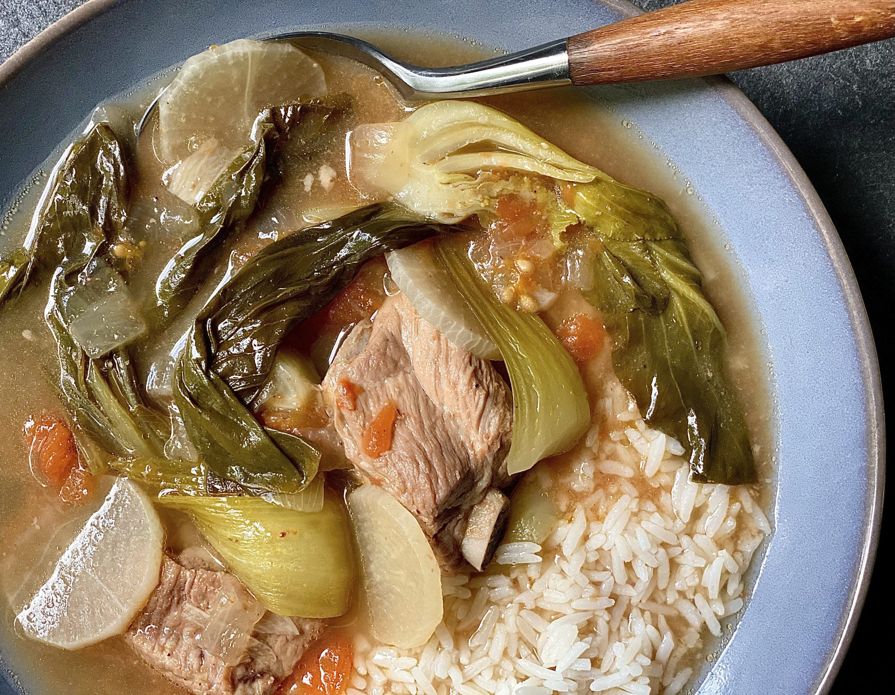

Sinigang
Home Page

Sinigang is a classic Filipino soup characterized by its sour and savory medley of flavors. It's popular comfort food in the Philippines, usually served on its own or paired with steamed rice on rainy days to ward off the cold.
Ingredients
- Pork - bony cuts such as spare ribs, pork belly with ribs 2.2 lbs
- Tomatoes - 2
- Onion - 1 peeled and quartered
- Fish sauce - 1 to 2 tablespoons
- Gabi (Taro)
- String Beans
- Eggplant - 2
- Okra
- Bok Choy - 1 bunch
- Radish - 1
- Sinigang sa Sampalok Mix (With Gabi) - 2 packs
- Salt and pepper to taste
Instructions
- In a pot with water, boil pork, tomatoes, onions, Gabi until the Pork and Gabi become tender.
- Add the Sinigang sa Sampalok mix, Okra, String beans, and Eggplant.
- Season with Fish Sauce or Salt.
- When Okra are tender, add the Bok Choy and simmer for a minute more or two.
- Serve hot or with Rice.